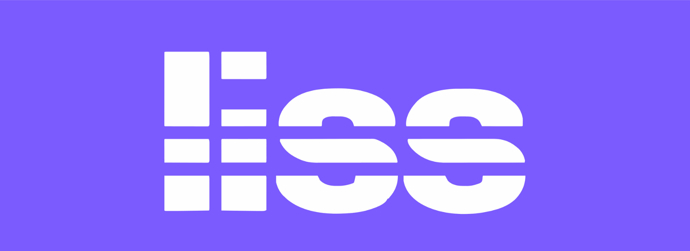

Una nueva forma de acceder a tecnología en Venezuela
Tecnología para todos, un mes a la vez.
Estamos creando una membresía para que más personas usen la tecnología que necesitan, con una cuota clara y un servicio que las acompaña.

 Paga el acceso,
Paga el acceso,no la deuda.
Más que una plataforma
La tecnología puede abrir puertas. Queremos abrirlas contigo.
liss nace en Venezuela con una misión social: democratizar el acceso a tecnología de vanguardia. Queremos que más personas puedan estudiar, trabajar y mantenerse conectadas con herramientas a su alcance.
Empezamos por teléfonos. Lo hacemos con una membresía que aspiramos a mantener accesible, simple y transparente.
Un modelo pensado para la vida real.
Sin vueltas para entender cómo funciona.
Condiciones claras antes de decidir.
Así lo estamos construyendo
Una idea sencilla.
Un camino claro.
Del primer equipo a lo que viene después, cada momento debe ser fácil de entender.
- 01
Conoces tu membresía
Eliges entre las opciones disponibles y revisas las condiciones antes de empezar.
- 02
Usas tu equipo
Disfrutas la tecnología con una cuota mensual definida y acompañamiento de liss.
- 03
Decides cómo seguir
Al terminar el ciclo, devuelves el equipo y puedes renovar o rescindir la membresía.
El equipo siempre pertenece a liss. Las condiciones comerciales definitivas se anunciarán antes de abrir el servicio.

Tecnología para tu día a día
Una puerta de entrada al universo Galaxy.
Estamos explorando equipos Samsung Galaxy para la primera etapa de liss. La elección de modelos, disponibilidad y condiciones todavía está por confirmarse.
También estudiamos Knox Guard como herramienta de administración responsable de los equipos de la membresía.
Explora Galaxy y Knox
Nuestra razón de ser
Paga el acceso, no la deuda.
Un buen equipo no debería quedar fuera de tu alcance por el pago de una sola vez. En liss, el centro es poder usarlo con claridad y acompañamiento.
Conoce qué incluiría la membresíaLo esencial
Preguntas claras.
Respuestas claras.
¿Me quedo con el equipo al terminar?
No. El equipo pertenece a liss durante toda la membresía. Al finalizar el ciclo lo devuelves y puedes renovar o rescindir.
¿Qué pasa si el equipo se daña o me lo roban?
La propuesta contempla un seguro para daños y robo, sujeto a condiciones que publicaremos antes de abrir el servicio. Las reparaciones se gestionarán con liss; cualquier importe a tu cargo se cotizará y autorizará previamente.
¿Cuánto costará?
Estamos definiendo los montos y el alcance final del servicio. Los publicaremos antes de abrir membresías.
¿Ya puedo unirme a la lista de espera?
Todavía no. Estamos preparándola y anunciaremos su apertura aquí.
Lo que viene
Estamos preparando algo para ti.
La primera etapa de liss está en construcción. Aquí compartiremos la apertura de la lista de espera, los equipos y las condiciones definitivas.
Lista de espera: próximamente